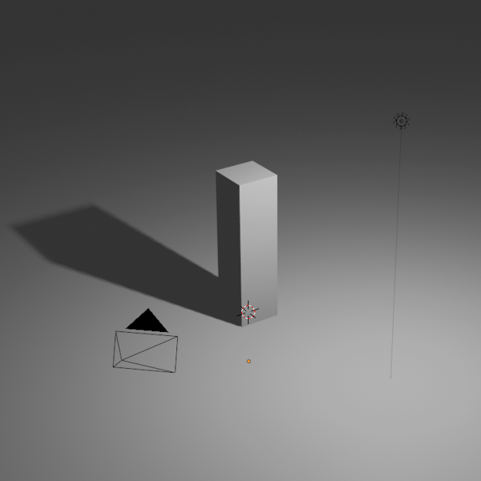
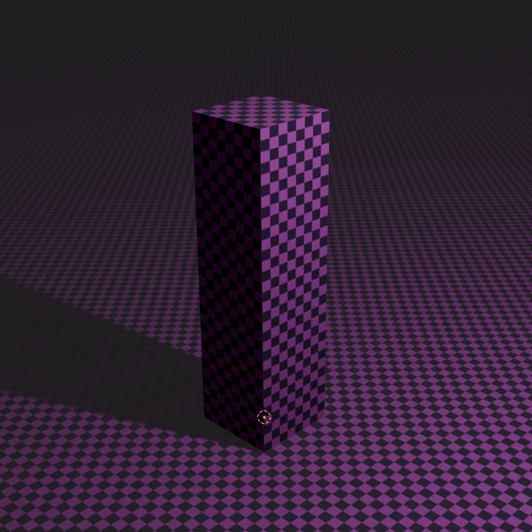
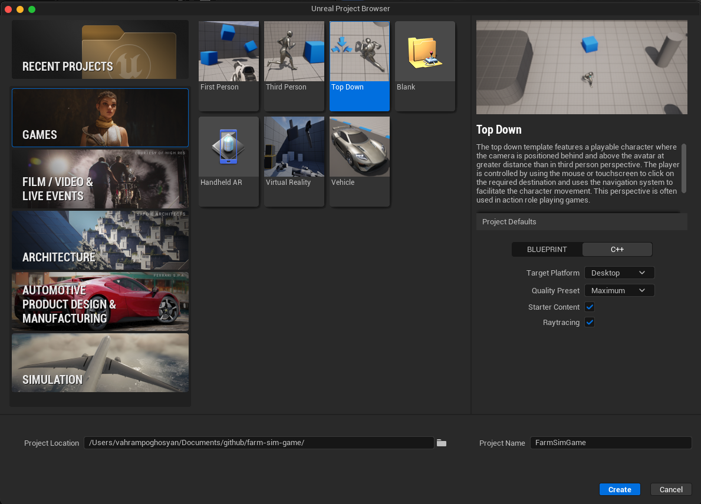
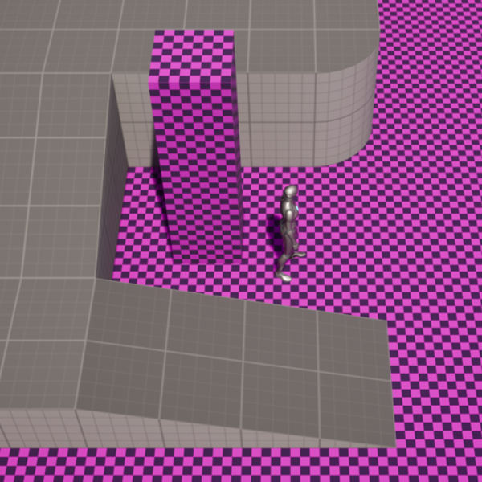
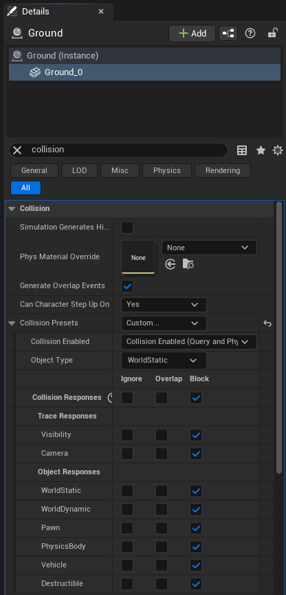
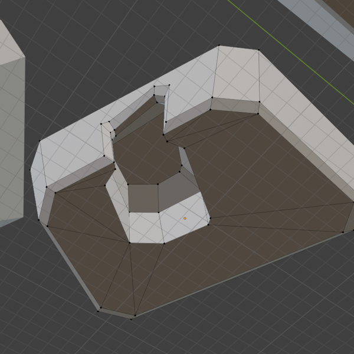
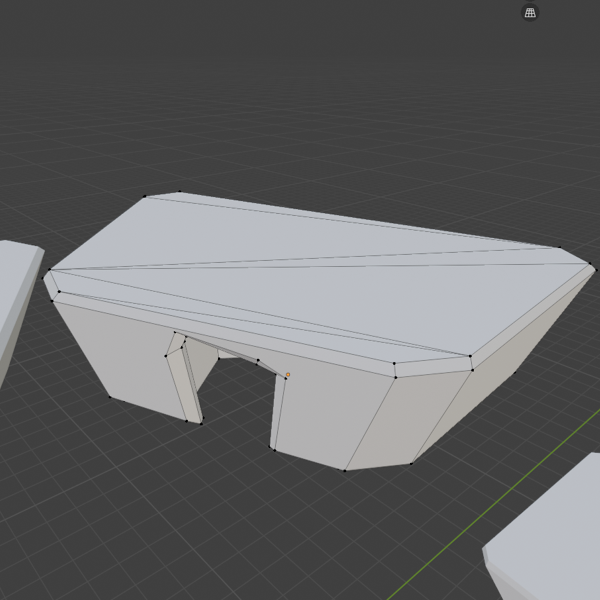
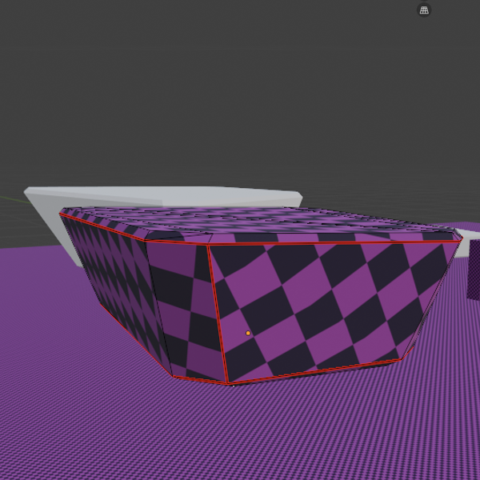
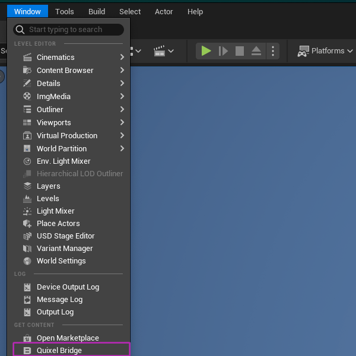
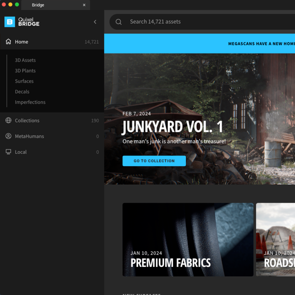

Day 0
Programmers count from zero. Day 0 is when I had the idea for a restaurant sim crossover with a farming sim that happens here on Esplanade beach (which always inspires me to make something). Here are the rough notes I jotted down in my notebook:
Order queue with a timer (Overcooked style)
You can grow foods, plants, and flowers for grocery stores, for contractors, for weddings
Ability to crossbreed flowers, foods, and plants according to order specifications
There are various things that can go wrong, such as droughts, overwatering, pests, etc.
The flower shop can combine flowers for more complex orders.
You can also add fishing or shell collection mechanism to have an excuse to go to the beach. Fishing will be a small serene (perhaps a welcome 2D detour from 3D graphics?), and there will also be the ability to grow fish farms. Fish can be sold at grocery stores, and shells can be sold to souvenir shops (these end users won’t be featured in the game just so there’s no scope creep).
My vision with this is to combine the serenity of farming games (like Stardew Valley) and add a layer of timed challenge. Each round lasts 15-30 mins and there is an order queue, like in restaurant sim games (e.g. Overcooked).
But, there is also progress that the players get to keep after each round (as they unlock more seeds for plants/flowers/produce or materials to expand their farm or storefront).
Support local co-op. Will add online multiplayer later.
Engine: Unreal Engine 5 Workflow: Blender for 3D modeling and basic texturing with a color atlas, Unreal Engine for the more complex materials and game development.
The graphics have to be somewhat cartoonish, if I want to be able to make the entire game myself. This means no realistic Unreal foliage, I will make the succulents myself in Blender. It’s more fun that way, and feels more bespoke. I will learn a lot about the 3D workflow too. Here’s a pretty cool starter tutorial for using a color atlas in Blender, which is what I will be doing for the basic texturing of the models.
It might also be good to set up a master material in Unreal that has parameters for color, roughness, metallic, etc. and then just use a color atlas for the color and use the other parameters to add some variation to the materials. Follow this tutorial to set up a master material in Unreal. Some of this stuff is way overkill for a stylized game, but it will be good to learn the workflow and have the option to add more complexity to the materials later on if I want to.
Interesting note from the video above. While scaling an RGB image has an obvious effect on the image, it might be less clear what exponentiation does.Well, seeing as how numbers between \(0\) and \(0.5\) get smaller when much faster than numbers closer to \(1\) (and numbers over \(1\) get larger with exponentiation), we can see that exponentiation has the effect of increasing the contrast of the image.
I realized the high-end workflow for a game with high graphical fidelity after watching that video. The workflow is to create a high poly model in Blender, then bake the normal and roughness maps, and then use those maps in Unreal to create the materials. The baked normal and roughness map can be blended with a normal map and roughness map produced from the texture itself (or those that already come in a PBR texture). I will try to incorporate a simplified version of this master material workflow (without making it overly realistic, to avoid the uncanny valley).
Here are my short term goals:
- Create a single game asset, export it out to UE5 as soon as possible (to avoid issues with origin of objects, scale, etc. later on). Say, a small windmill, a nice rotunda, growbeds for the plants (1x1. 1x2, 2x2) or something else for the farming game. Make growbeds modular, so that they can be combined in different ways in UE5 to create different farm layouts.
- (Bonus) Add a simple animation to the asset, like a windmill spinning.
- (Extra Level) Make a rigged character in Blender and export it to Unreal.
Day 1
It’s been a few days since I wrote the above, I’ve been busy playing modded Oblivion and taking care of chores. I realized the thing about tutorials is that they all contain bits and pieces that are relevant to what I’m trying to do, but they also contain a lot of stuff that is not relevant. So, I need objective-driven learning. I need to have a clear goal in mind (e.g. create a stylized beach scene).
What is out of scope for now:
- High poly modeling and baking normal and roughness maps. I will just make low-poly models with a color atlas for the textures. Modelling and UV unwrapping are hard enough for right now.
- Rigging and animation. I will just make static models for now.
I honestly don’t even need to create a color atlas for the textures, I can just use the base color input of the material in Blender or Unreal. Using a color atlas is good practice, however, to more easily verify the UV mapping. After that I will consider to either go with a master material (and with it, optionally, the whole high poly modeling + baking workflow). This is stage 2, and I will get to it when I have a better grasp of the basics of modelling game-ready assets in Blender and importing to Unreal.
So, I guess that’s the objective: Create a stylized beach scene in Blender with proper UV mapping, and then export it to Unreal Engine 5.
Update: Defeated by Blender’s face sets in sculpt mode. Couldn’t figure out how this feature works, but it’s supposed to make sculpting only on the selected faces easier. Will continue tomorrow…
Day 2
Instead of passively consuming another tutorial on face sets in Blender, I decided to just go into sculpt mode and start playing around with it. I can always use a copy of the low-poly mesh as backup, but also as an operand in a boolean modifier to cut away any irregularities in the high-poly model (avoiding the use of face sets altogether).
The units in Blender are in meters, so I’ll make a \(50 \times 50\) square meter area to start with (about a quarter of the size of a soccer field). This should give us plenty of room to walk around in Unreal (once we make a playable character). It might even be that the whole game fits in this area, we’ll see. We also need a human scale reference, so I’ll make a simple cube that is 1.8 meters tall (the average height of a human) and name it “human” in the scene.
I will be greyboxing the scene first, and then adding more details later on. So, for now, no materials. Let’s just make a simple representation of the geometry of the source material (in this case, the following pictures taken by me in Esplanade beach, which is the inspiration for the location in the game). Here they are. This was assembled in Krita, Gimp annoyed me by being slow and unintuitive, so I uninstalled it.

I will also be using pureRef, a free software for organizing reference images. Just drag and drop all the reference images into pureRef, and then you can easily zoom in and out, move them around, and organize them in a way that makes sense to you. It’s a great tool for keeping all your reference material in one place and easily accessible while you’re working on your project.
To keep it simple, we won’t even sculpt in high poly yet, we will use greyboxing. Here is a video on the usefulness of greyboxing, it’s a bit of a ramble, but the key takeaway is to keep our shapes simple, and use a checkered material that helps visualize the UV mapping in the viewport, on the object models themselves.
Creating the ground plane and a reference “human” model for scale
Notice how the “human” model has its origin set to scene origin. This is important for when we export the model to Unreal, as it will help with the placement of the model in the scene. The ground plane also has its origin set to scene origin. The shortcut for this is to select the object, then:
- Press Shift+ C to put the 3D cursor at the world origin (0,0,0)
- Then, right click on the object and select Set Origin > Origin to 3D Cursor. This will set the origin of the object to the world origin.

Let’s now apply a checkered material to the ground plane, it’s fine to keep the human model in greybox. But might as well do it, I am eventually going to give the “human” model some character as well.
To do this, we can’t use procedural materials. We need an actual Texture Coordinate node with a Mapping node to control the scale of the texture, and an Image Texture node with an actual checkered image. We can make a simple checkered image in Krita. Let’s make the image texture have a high resolution, like \(2048 \times 2048\). Even though this game is stylized, I want to have the option to zoom in on the textures without them looking blurry.
Use the \(x\), or \(y\) scale controls in the UV editor to scale the UV mapping for each object (since the material itself is shared, we don’t want to use the scale controls in the Mapping node, as that would affect all objects that use the material). Here is the checkered material applied to the ground plane and the “human” model.

Next step: Import this into UE5 and check the scale of everything.
Day 3
Since I want to also create pixel art, the game will blend a bit of 3D and 2D (for such things as UI icons). This can be tacky if done improperly, so keep experimenting. Perhaps the 3D models can be stylized in a way that they look good with pixel art. Or, perhaps the pixel art can be used for the UI and inventory icons. Speaking of inventory, Overcooked has no such concept, and I’m torn on implementing this. I hate navigating the inventory. I think there can be a single storage shed that stores all your items, and you physically should go to the shed to get the items you need for your orders. This will also make for some fun gameplay.
New features, summed up:
- Blend 2D pixel art with 3D graphics
- No inventory UI, instead, a physical storage shed that the player has to go to in order to get the items they need for their orders
When the player unlocks new seeds for plants, or new materials to expand their farm/storefront, they will be able to go to the storage shed and pick up those items. You can figure out the logistics of this later (like how often do these items refill). This will also make for some fun gameplay, as the player will have to manage their time, or delegate to the second player. This also raises another desirable feature:
- Dash or sprint mechanic. Much like in Overcooked.
Exporting what we have so far to UE5
In Blender, go to File > Export > USD (Universal Scene Description). The difference between USD and FBX is something I will have to look into later, but for now I’m just following along this tutorial. In the export settings, make sure to select the following options:
- Keep all the defaults
- Click Selected Objects: This will only export the objects that you have selected in the scene. This is important to avoid exporting unnecessary objects (like the camera, lights, etc.) that are not needed in Unreal.
- If there’s an option to Apply Transform, do so. If not, do it manually in Blender before the export. This will apply the location, rotation, and scale of the objects to the exported file (avoiding positioning issues in Unreal).
Then, in Unreal Engine 5, create a new project with the following settings. The game will be top-down, most of the time, with a camera tilt option (so we can see the beautiful sunsets).

Day 4
Today picks up from last day’s unsuccesful attempt to export the scene from Blender to Unreal Engine 5.
More on Exporting what we have so far to UE5 (still trying)
The Unreal Engine 5 control schema and UI are something to get used to, but here is the documentation for reference.
Once I exported the USD file, but before importing to UE5, I noticed that my UV mapping was wrong for one of the faces of the “human” model, so I went back to Blender and tried to fix it. This led me down a rabbit hole of trying to figure out how to use the UV editor in Blender, which I thought I already knew how to use, but I guess I didn’t. The way my faces overlap the image texture in the UV editor simply did not reflect how the texture was applied to the model in the viewport. Turns out, I had changed the Image Texture node’s interpolation from “Linear” to “Box.” This is a setting that controls how the texture is sampled when it is applied to the model. “Linear” interpolation means that the texture is sampled in a way that creates smooth transitions between pixels, while “Box” interpolation means that the texture is sampled in a way that creates hard edges between pixels. Not sure why that would result in the outcome I was seeing (the boxy “human” model having its long faces be a base, constant color), but changing it back to “Linear” fixed the issue.
The UV’s needed re-mapping. I resisted the urge to watch another tutorial. I just went into the UV editor and started playing around with the UV mapping for the “human” model until I got it somewhat right (acknowledging that there are more right ways to do this step than just one). Just used RMB > Stitch with the right faces selected. Then constrained the move tool to the right axis, and enabled vertex snapping to straighten out the faces in the UV editor… Follow Active Quads is also a useful to reset the scale of the faces (in case one or two of them are scaled differently than the others – so when uniform scaling isn’t the answer).
I also noticed some z-fighting issues in Blender between the bottom face of the “human” model and the ground plane. I raised the “human” model by 0.025 meters to fix this (0.01 m was not quite enough, I could still see z-fighting). This is a common issue in 3D modeling, where two faces are co-planar and the renderer has trouble deciding which one to draw on top. Raising one of the faces slightly is always the solution.
That’s better. In fact, here’s the object scene rendered to the browser by Three.js, with the checkered material applied. The UV mapping is correct now, as we can see the checkered pattern on the “human” model.
TODO: Figure out how to render the USD file in Three.JS. Use this post as reference.
The UE5 import process
Now, finally, time to take this bad boy into Unreal Engine 5. As a reminder, I am following this tutorial.
Once inside Unreal Engine:
- Get the USD Importer plugin.
- Go to Window, and enable USD Stage. This will allow us to import USD files and see them in the viewport.
- Think of USD Stage as a sort of staging ground before actually importing the assets into Unreal. Import the USD file that we exported from Blender. USD files are unlike OBJ or FBX files, in that they can contain multiple objects and their hierarchy, as well as materials and textures. This is why we need a staging ground to see the contents of the USD file before importing it into Unreal.
- Unreal might ask us to create a cache for the USD stage actor. This is just an abstraction used by Unreal to read USD files, the “stage actor” reads the file and displays its contents in Unreal. We should create a
USD/Cachedirectory in theContentfolder of our Unreal project and select that as the cache directory when prompted.
- Unreal might ask us to create a cache for the USD stage actor. This is just an abstraction used by Unreal to read USD files, the “stage actor” reads the file and displays its contents in Unreal. We should create a
- Important: In the USD Stage window, click Actions > Import. This will import all the objects in the USD file into Unreal’s Content Drawer (I tend to choose the
USDfolder we created above). Only after importing into Unreal should you apply collision to the imported objects. Unreal will remember the collision settings of the objects even if we re-import the USD file (which is great for a fluid Blender-to-UE5 playtesting workflow for our level design). After importing, the UsdStageActor can be deleted from the scene, we don’t need it anymore. - In Unreal Engine 5, just check if the material and scale look good. They do.
Let’s also set up simple collision for the objects in Unreal, so that we can walk around in the scene without falling through the ground plane. We can use simple box colliders for now, since our models are simple.
Steps to enable collisions inside USD stage:
The good news is that UE5 remembers the collision settings of objects even if we re-import the USD file, so we can have a fluid Blender-to-UE5 playtesting workflow for our level design. Just make the model changes in Blender, re-export, and re-import inside UE5.
Select the object in USD stage, then in the details panel, click into the Static Mesh that is listed under the Mesh section. This will take us to the Static Mesh editor for that object. In the Static Mesh editor, go to the Collision > Add Box Simplified Collision.
Actually, my playable capsule of a character in Unreal still falls through the ground plane, so I will have to take a look at this the next day 🤔.

Next steps (for next day):
Match the scene in Unreal as closely as possible to the scene in Blender. Then calibrate lighting in Unreal to match the lighting in Blender exactly. Since we are going to create the assets in Blender, we want to make sure that the lighting in Unreal matches the lighting in Blender as closely as possible, so that the materials look the same in both. After that, apply collision to the imported objects in Unreal.
Day 5
📖 Figured out yesterday’s issue with the collisions. The problem was that the ground plane was not set to Collision Preset to Custom, and the Object Response was not set to WorldStatic (which indicates an immovable object in the world). Make sure all the Collision Responses are set to Block (especially for Pawn which is our playable character in Unreal). And make sure Collision Enabled is set to Query and Physics. After changing these settings, the character can now walk on the ground plane without falling through.

Collision settings for the ground plane and the “human” model in Unreal Engine 5.
I found that, by default, reloading the USD file in the USD Stage does not preserve the collision settings that we set for the objects in Unreal. This is a problem for a fluid Blender-to-UE5 playtesting workflow for our level design. Here’s a plugin that is supposed to preserve the collision settings when reloading the USD file in the USD Stage: USDHook4Collisions. This is a Python plugin for Blender (not Unreal), so follow these steps to install it:
- Download the plugin from the GitHub repository.
- In Blender, go to Edit > Preferences > Add-ons and Install from disk.
- Choose the folder containing the
.pyfile of the plugin and install it. - Restart Blender
Now, every time we export, the plugin will automatically preserve collision settings for the objects in Unreal Engine 5 when we reload the USD file in the USD Stage. In fact, I’ve found that this plugin makes everything just work without having to fiddle with the rest of Unreal’s convoluted collision settings (so everything mentioned so far is a bit redundant. Yet, after exporting with this plugin, when I check Show Simple Collision option inside Unreal’s Mesh Editor, I cannot see the simple collision box that I added in Unreal. I don’t see any complex collisions either. I don’t why it works, but it just does. 🤔
Here’s what Copilot had to say about this plugin (when supplied the code):
Why You Can’t See Collision in Mesh Editor
The Mesh Editor shows collision data baked into the Static Mesh asset (simple boxes/capsules/convex hulls, or a dedicated complex collision mesh). This plugin doesn’t create any of that — it operates one layer above, at the USD Stage Actor → component level. The mesh asset has no collision data; the collision behavior is configured on the component that references it. What the Blender plugin does is the equivalent of Use Complex Collision As Simple (essentially treating the mesh’s geometry as the collision box). As a reminder, here’s the UE hierarchy for reference:
UE Hierarchy: Actor (entity placed in the world) → Component (building blocks of an actor) → Asset (mesh, material, etc. that a component references)
As a reminder, Use Complex Collision As Simple setting exists as an alternative to creating a separate collision mesh for each object in Blender. So it lets us bypass the nitty gritty of creating collision meshes in Blender…
We can now greybox the rest of the scene in Blender. After that we will need to start worrying about materials. Fortunately, there is a free alternative to Substance Painter called Quixel Mixer, which is also owned by Epic Games, so it has a good workflow with Unreal Engine. We can use Quixel Mixer to create the materials for our assets, and then import them into Unreal Engine. The flow would be something like this:
- Create a high poly model in Blender
- Bake the normal and roughness maps in Blender
- Use Quixel Mixer to create the materials, using the baked normal and roughness maps inside Quixel Mixer.
- Import the resulting materials into Unreal Engine and use the Material node editor to hook them up to an Unreal material
Here’s a Quixel Mixer tutorial for reference.
But regardless, let’s proceed with the Greyboxing of the rest of the scene in Blender. This is the fun part, we need to keep it simple but capture as much of the requirements and the important landmarks in the source material as possible. In the process, we will have to create more complex collision boxes for the new objects we create, so we will get more practice with that as well.
Greyboxing: Modular Assets from Blender to Unreal
I want to do most of the greyboxing in Unreal, since it’s the final destination for the assets. I want my assets to be modular, so I will create the modular pieces in Blender and then import them into Unreal. For example, I will create a Rock_Large, Rock_Medium, and Rock_Small models in Blender (keeping them very rudimentary), and then import them into Unreal where I instance them and arrange them in the scene to create the rocky areas of the beach. Instancing is great because I can make changes to the original model in Blender, re-export, and the changes will be reflected in all the instances in Unreal. This is a great workflow for level design, as it allows us to quickly iterate on the layout of the scene without having to worry about the individual assets.
When greyboxing, we want to also keep in mind the control schema and camera position of the game, so that we can design the levels to be navigable. In this case, the top down approach is our chosen setting.
Here are the first few modular assets I will create.
- Rocks (Large, Medium, Small)
- A small rotunda (with a collapsed roof and pillars)
- Bridge pieces (1x1, 1x2, 2x2)
- Some large trees/canopies (to create some shade areas on the beach, and to add some verticality to the scene)
- Maybe a few treehouse models, if I’m feeling ambitious.
Again, all of these will be super simple for the time being. Similar in complexity to the “human” model we created in Blender, and the ground plane. The goal is to capture the essence of the source material, not to create photorealistic models.
Here’s an example of a simple rock model I created in Blender, with a cave. I used Boolean modifiers to carve out a box shaped cave, then used the Bevel (Cmd + B) and Knife tool K to add some detail. I made sure the polygons are all quads, to avoid any issues with the UV mapping later on. The more you use the knife tool to define the flow of the topology, and the better your seams, the better the UV mapping will be. What you’re looking for is for there to be no texture stretching in some areas of the object. The checkered pattern makes these areas easy to spot. As long as there’s no stretching, however complex the UV mapping is, it’s fine. Our choice of texture painter (Quixel Mixer) will be able to handle complex UV mappings.


Applying materials to irregular shaped greyboxed assets
Before selecting all faces in Edit mode and hitting U > Unwrap to create the UV mapping for the object, we can mark some edges as seams by selecting them, try right-clicking and selecting Mark Seam. This will help Blender understand how to unwrap the object in a way that minimizes distortion. For example, for the rock model, here’s what the seams could look like:

Of course, we need to scale the UV mapping in the UV editor to make sure that the checkered material has the same zoom level for our model as it does for the rest of the objects in the scene.
Running scripts in Blender
One of the objects somehow had tens of thousands of materials assigned to it. Rather than manually remove them, I selected the object in Object Mode, then went to the Scripting tab in Blender, and ran the following script in the Python console to remove all materials from the object.
import bpy
C = bpy.context
for i in range(1,len(C.object.material_slots)):
C.object.active_material_index = 1
bpy.ops.object.material_slot_remove()
bpy.ops.object.mode_set(mode = 'EDIT')
bpy.ops.mesh.select_all(action = 'SELECT')
bpy.ops.object.material_slot_assign()
bpy.ops.object.mode_set(mode = 'OBJECT') Credit to this Blender StackExchange post for the script.
This script does the following:
- It loops through all the material slots of the selected object and removes them.
- It then switches to Edit mode, selects all faces of the object, and assigns the default material to all faces.
- Finally, it switches back to Object mode.
Day 6
Taking a break today, but I realized that now’s a good time to take a little detour into Unreal Engine’s visual scripting system, Blueprints, to add some simple camera rotation controls for the player. Even though we’re not through with greyboxing our scene yet, I want to enable camera rotation controls for the player, so that we can see the scene from different angles (and assess the composition better).
Introduction to blueprints (adding simple keyboard movement and camera rotation controls)
Unreal Engine’s visual scripting system is called Blueprints. It’s a powerful tool that allows us to create gameplay mechanics and interactions without having to write code. We can use Blueprints to create things like the order queue, the storage shed, the dash/sprint mechanic, etc. Blueprints are a combination of a static mesh (with collision), and a visual scripting graph (called an Event Graph) that defines the behavior of the object.
I will be using blueprints to add rotation controls to the player camera. But this is just the tip of the iceberg, I will also be using Blueprints for a lot of the gameplay mechanics in the game, so it’s important to get comfortable with it early on.
Here’s a simple guide I’m following on adding simple WASD movement and camera rotation controls to the BP_PlayerController in the Content/TopDown/Blueprints folder. We will see the C++ code generated by the Blueprints as well, which is a nice way to learn how the visual scripting translates to actual code.
Next steps: I wasn’t able to get the WASD controls working 🤔. Revisit this effort…
Day 7
The WASD controls were not working because I needed to click the level viewport to give it focus. Maybe that’s when the engine fires the Event BeginPlay event, which is where the input bindings are set up. Once I did that, the controls worked albeit with the wrong mappings. Every key was mapped to the forward movement…
Day 8
I left the controls for another day. I’ve been looking into the Unreal Engine Nanite system. For this project, Nanite is definitely overkill, but it would be very useful for static architectural rendering, for example, or for quick proof-of-concept renders where we don’t necessarily want to do world-building ourselves. Nanite allows us to import models with millions of polygons (similar to high-poly models used in the movie industry) and still maintain great real-time performance for smooth gameplay. It’s especially great for foliage, but all meshes can benefit from having Nanite enabled. Speaking of which, Nanite can be enabled with a single click either in the the static mesh settings (for each mesh), or in the project settings (which affects all meshes).
Here’s an unrelated, bonus tip for quickly rendering of static scenes, by the way. This advice is not suitable for game development where the camera is moving around:
Nanite is a virtualized geometry system that allows us to import high-poly models without having to worry about LODs (Level of Detail) or performance issues. Before nanite, we’d have to make 4-5 different versions of each model with different levels of detail. LOD 0 would be the high-poly version, LOD 1 would be a medium-poly version, LOD 2 would be a low-poly version, and so on. LOD 4 or 5 would be a billboard version (a flat plane with a texture of the model). With Nanite, we can just import the high-poly version and Unreal will handle the rest. It will automatically generate the LODs and switch between them based on the distance from the camera. LODs in Nanite are handled differently, Nanite breaks the mesh into voxels when the camera is far away. This makes the LOD transition much smoother and less noticeable. That is, no weird popping when the LOD switches like in older games. This is a game-changer for game development. Also, we don’t have to make separate models for different LODs.
I also discovered about Quixel Bridge, (Windows > Quixel Bridge) which is a tool that allows us to import assets from the Quixel/Megascans library directly into Unreal Engine.


The Quixel library has a huge collection of high-quality 3D assets, including plants, rocks, buildings, etc. There are Nanite as well as regular assets. We could use these assets to populate our scene and save time on modeling everything ourselves for a photorealistic end result – after all, why would the architect also concern themselves with meticulously building the entire rest of the world around their subject (which is the building itself)? No need to reinvent the wheel I say, I could just import some high-quality assets from the Quixel library to quickly populate the scene (especially by combining them with Unreal’s foliage painting tools to quickly paint foliage assets I get from Quixel into the scene). This would enable me to focus on modeling, texturing, and shading the subject matter itself… instead of getting lost in the details.
In a stylized game such as this one, however, I don’t want to just use entire photorealistic assets from the Quixel library. I will just use the materials from the Quixel/Megascans library. I can either directly import them into Unreal (these are all PBR materials, so they already come as a set of 3-4 texture images – for the base color, normal, roughness, etc). At a high level, we could just create a material in Unreal’s Content Drawer and wire these Quixel images into the shader node inputs. Alternatively, I can also compose different materials from the library together using Quixel Mixer and then import the more refined materials as images into Unreal. This is most likely going to be my workflow. Here’s an excellent video on how to use Quixel Mixer with the Quixel library.
Instead of painstakingly downloading non-PBR textures, deriving their roughness and normal maps myself (using Blender’s material composer), and then mixing multiple materials together inside Blender (like I did in this post), or even instead of doing the same process inside Unreal’s own material editor (by utilizing a master material, as originally planned), I will use the Quixel Mixer with the Quixel library to create the materials for my assets. Of course, I could still choose to use a master material in Unreal but there is no reason for me to do so if I’m using Quixel Mixer, as the materials I create in Quixel Mixer will already have the final parameters I need (I wouldn’t need Unreal’s master material to add variation to the materials, since I can just add that variation in Quixel).
I would just need to carefully UV map my assets in Blender, to make sure that the materials I create in Quixel Mixer are applied correctly (to avoid relying on the UV mapping logic of the master material in Unreal, which I won’t be using anymore). This is my preferred way of working anyway, node based UV mapping in Unreal’s material editor sounds like a nightmare to work with (because some objects may need a more tailored approach). This is making me realize: All of these tutorial videos are an absolute fire hose of information, and it’s easy to get lost in the details. For example, to a beginner it’s not immediately obvious that UV mapping using nodes in the material composer of Unreal (or Blender, for that matter) is optional, and that you can just do UV mapping on the object-level in Blender (which is a more explicit workflow that forces you to think about the topology of your meshes). That’s my understanding, at least.
This entire tangent on Nanites and Quixel Mixer is a bit of a detour from the original plan of greyboxing the scene and then applying simple materials to it. But here it is in summary:
Blender to Quixel Mixer to Unreal Engine workflow for materials
- Model the assets inside Blender
- Map the UVs inside Blender (so that the materials from Quixel Mixer can be applied correctly).
- There is an art to this: here is a video that goes over using a Blender plugin called TexTools designed to work with Quixel Mixer. The tool associates a color ID with each UV island after unwrapping, which makes it easier to mask by that ID in Quixel Mixer and paint separate materials on separate faces of the object. Tip: Quixel Mixer can show full 3D objects (exported from Blender in FBX format) – that video shows how.
- Create the materials with Quixel Mixer (use the assets from the Quixel library), and add any variation to the materials in Quixel Mixer itself
- Here’s the same video mentioned earlier that goes over this in detail.
- Export the materials from Quixel and import them into Unreal Engine, where I can access them from the Content Drawer and use them in my scene after creating a material that uses them as input. Feel free to still experiment with generalizing or parametrizing any part of this material using the node-based material composer (like originally planned with Unreal’s master material, but without going through the entire trouble).
- Optional and as a last resort: If you notice any stretching or weird artifacts in the materials in Unreal, but you don’t want to work your way up this workflow to fix it at the source, it is fine, I guess, to rely on Unreal’s material editor to fix some of the issues immediately by using some complex UV mapping nodes in Unreal or, more simply, adjusting the vertical/horizontal tiling in the simple Unreal material hooked to the Quixel images (always see if you can get away with doing that first). The TextCoordinate node in Unreal is what controls the tiling of the material.
Back to implementing simple WASD controls (still trying)
As a reminder, here’s the video I’m following for setting up simple WASD movement.
Here are the important components of this feature, they can all be found in the Content Drawer:
Player controller blueprint
Right click inside Content Drawer, create new Blueprint > BP_PlayerController which accepts the input from the keyboard and sends it to the character blueprint.
Character blueprint
Right click inside Content Drawer, create new Blueprint > BP_Character which is a type of pawn that has a static mesh (which could be the “human” model we imported from Blender at some point, foreshadowing…) and a camera attached to it. This blueprint receives the input from the player controller above and moves the character (which is just a mesh with a camera) accordingly.
Game mode blueprint
Right click inside Content Drawer, create new Blueprint > BP_GameMode is where we set the default pawn class to be our BP_Character (in the Classes tab of the blueprint for game mode). In Project Settings, set game mode to BP_GameMode. These steps tell Unreal which character to use when the game starts. It allows us to spawn into the level with our character and have the controls work as expected.
Input mapping context
Right click inside Content Drawer, create new Input > Input Mapping Context > IMC_InputMapping which is a data asset (a table) that defines the actions corresponding to keyboard inputs. This is where we map the keyboard keys (like WASD) to specific actions. Speaking of which, we need to create those actions as well. For example, we can create an action called AC_Move and map it to the W key in IMC_InputMapping. Then, in the player controller blueprint (BP_PlayerController), we can listen for the AC_Move action and move the character forward when it’s triggered.
In summary, IMC_InputMapping maps a keyboard inpout to an action (like AC_Move). The character blueprint listens for the AC_Move action and moves the character accordingly when the action is triggered by the keyboard input.
So, add the W key to the IMC_InputMapping and define the trigger to be Down. This means that the AC_Move action will be triggered when the W key is pressed down. We will also need to add the rest of the keys (ASD) to the IMC_InputMapping and map them to the same AC_Move action with the same trigger condition (Down).
Action
Right click inside Content Drawer, create new Input > Input Action > AC_Move. Change the Value of AC_Move to be a Vector2D (instead of the default Boolean) since we want to capture movement in both the X and Y directions (forward/backward and left/right).
This fixed my issue with the movement where the character was only moving in one direction regardless of which key I pressed. Next time, we will add camera rotation controls as well, so that we can look around the scene while moving.